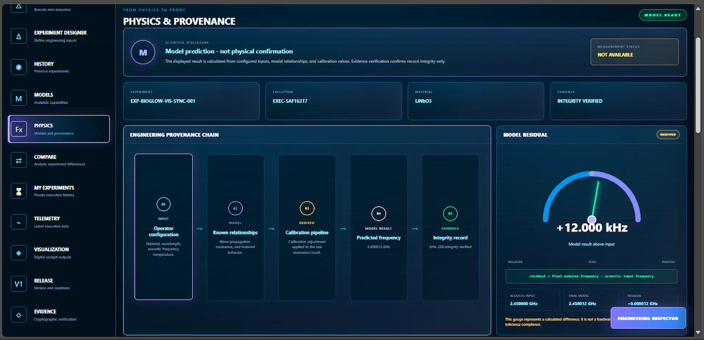
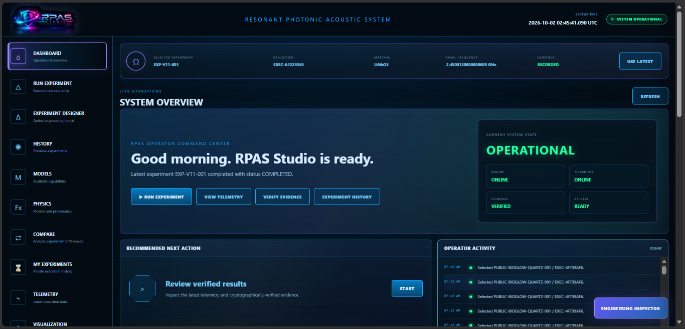
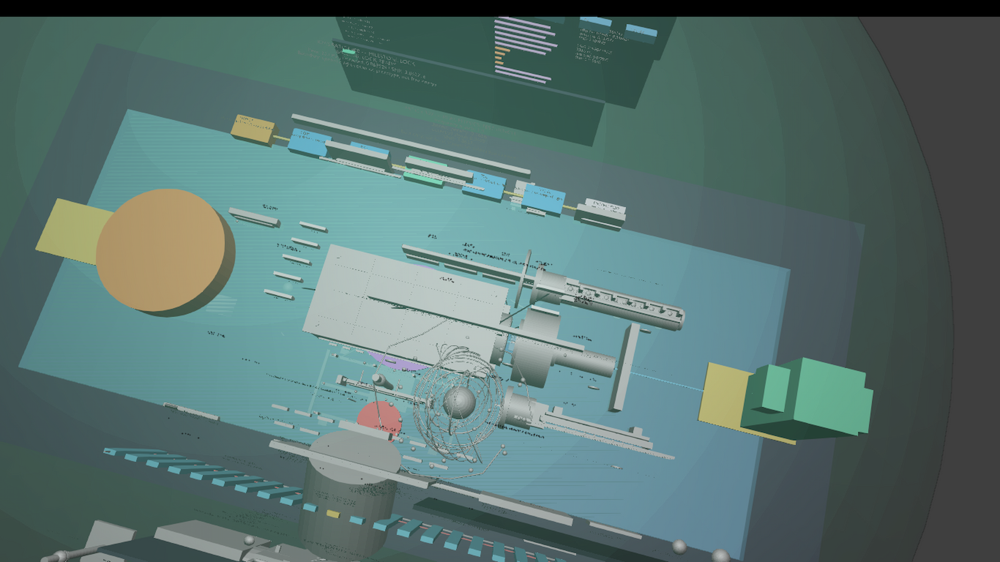

Model
Keep sourced physics, assumptions, hypotheses, simulations and predictions distinguishable.
RPAS Studio is being developed to reduce the distance between a scientific question and a defensible physical experiment. It connects reference data, equations, hypotheses, predictions, experimental configurations, measurements, evidence, and iteration without treating them as the same thing.

Research often becomes fragmented across literature, calculations, spreadsheets, simulation tools, instrument software, notebooks, plots, and interpretation. RPAS Studio is designed to keep those relationships traceable.

Keep sourced physics, assumptions, hypotheses, simulations and predictions distinguishable.
Physical confirmation belongs to instruments operating under a defined experimental protocol — not to a simulation.
Retain experiment history, telemetry, provenance and evidence so the path to a conclusion can be inspected.
RPAS does not tell the researcher what to believe. It reflects the experiment back with enough provenance to show where an idea became an assumption, where an assumption became a prediction, where prediction met measurement, and why the next decision was made.
BioGlow began as an independent investigation into interactions among incident light, material state, resonant mechanical or acoustic excitation, geometry, orientation, frequency, phase and measurable optical response.
Subsequent research identified substantial established work in acousto-optics, optomechanics, photon-phonon interaction, mechanoluminescence and autonomous photonics. RPAS therefore does not claim those foundations as new.
BioGlow remains useful as a research program for studying specific physical relationships, controls and response maps while clearly separating known physics, proposed models, predictions and actual measurements.
Biolumen is a developing research direction that will use the same evidence-first workflow: define the physical question, map established science and prior work, identify unresolved relationships, construct explicit models, design controls, and let measurement determine what survives.
RPAS Studio is intended to make that process reusable across different fields rather than being permanently tied to one physical hypothesis.
RPAS Studio includes a visual modeling environment for examining experimental configurations, system geometry and candidate physical relationships before physical testing.

A proposed explanation or research model.
A computational output produced under explicit equations and assumptions.
A physical quantity observed through an instrument under a documented experimental protocol.
RPAS produces computational outputs, predictions, classifications and evidence records. These require human review and do not constitute physical confirmation unless supported by actual measurements under a defined experimental protocol.
Negative and partial results remain valid evidence. If an experiment does not show enhancement, the correct result is simply: NO ENHANCEMENT OBSERVED.
RPAS developed from independent experimental questions and software work. As research expanded, related technologies and prior work were identified across established scientific fields.
Those discoveries are treated as foundations to understand and reference — not as inventions to claim. RPAS focuses on the particular experimental workflow, evidence architecture and research questions developed through the project.
RPAS Studio is an independently developed research project. Contributions help support software development, hosting, experiments, equipment and continued technical research.
Contributions support development and research. Do not describe them as tax-deductible unless that is actually applicable to your organization.